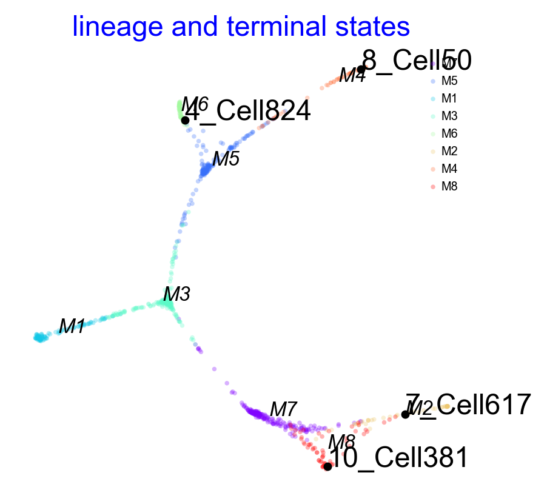
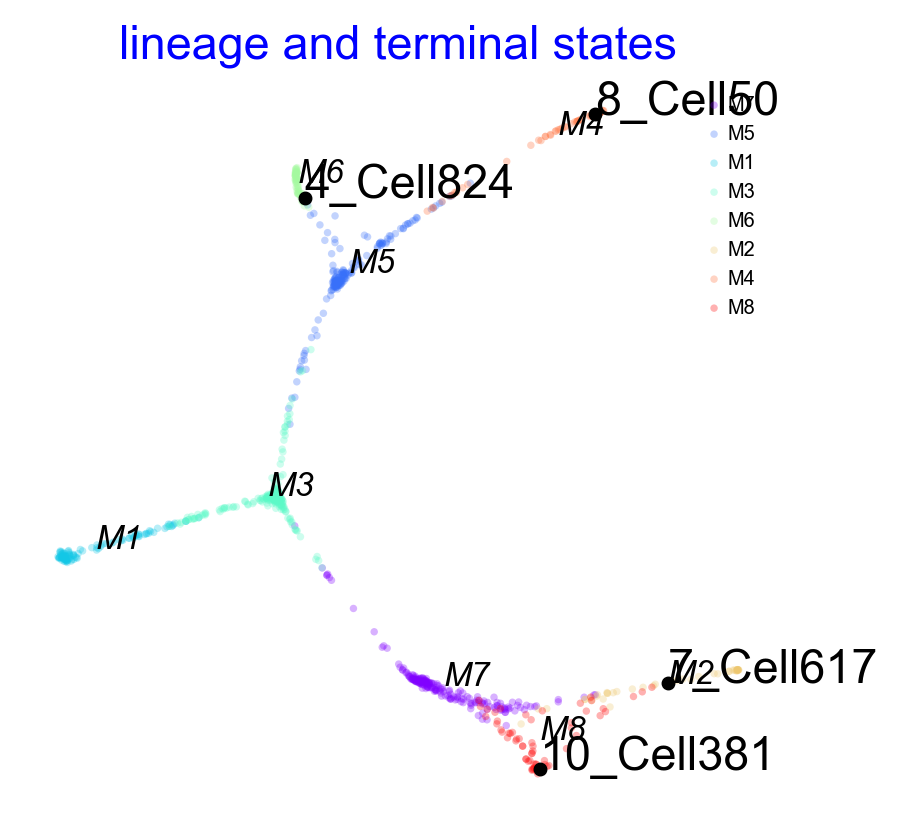

1. Basic workflow
This vignette shows the basic workflow of Via and how to access the different visualizations after running the computations. The dataset is a toy multifurcation. We start by importing modules.
from pyVIA.core import *
import pyVIA.datasets_via as datasets_via
import pandas as pd
import scanpy as sc
# Settings the warnings to be ignored
import warnings
warnings.filterwarnings('ignore')
First load all the data.
adata_counts = datasets_via.toy_multifurcating()
print(adata_counts)
true_label = adata_counts.obs['group_id'].tolist()
ncomps = 30
sc.tl.pca(adata_counts, svd_solver='arpack', n_comps=ncomps)
AnnData object with n_obs × n_vars = 1000 × 1000
obs: 'group_id', 'true_time'
Expected Outputs
Cluster graph level trajectory highlighting cell type composition, pseudotime and start/end states
Trajectory drawn onto embedding.
Lineage pathways depicting lineage probabilities towards each of the detected terminal states
Gene trends for each lineage for marker genes
Vector fields for fine-grained trajectory
Cluster graph trajectory colored by gene expression level
!! NOTE !! An atlas embedding is computed in later steps of this tutorial. It is preferable to compute the embedding separately, rather than in the initial run_via() as it then allows for greater control of visualization parameters and to split the total run time into visual and TI.
Parameters
knnnumber of nearest neighbors for the KNN-graphtrue_label: list of annotations length nsamples. if these are unavailable then leave as default Nonecluster_graph_pruning: typically 0-3, the number of standard deviations for clustergraph pruning. level of pruning applied to the clustergraph carried forward for pseudotime and lineage probability calculations. Larger means less pruningedgepruning_cluster_resolution: Controls granularity of clustering. range 0-1 is reasonable. values closer to 0 will result in more and smaller clusterstoo_big_factor: default 0.3. Clusters that are bigger than 30% of the entire cell population will be re-clustered. Values 0.1-0.3 work wellpreserve_disconnected: default = True. Attempts to reconnect fragmentation incurred by pruning. if you suspect disconnected trajectories, set this to Falsedataset=('' or 'group')and is set based on the type ofroot_userparameter provided :'group'works for any dataset where the root is provided as a group ID in the true_label. e.g. if root_user = [‘HSC’], then the root will be selected as a cluster which has root like properties and is largely made up of ‘HSC’ cells.''is suitable when'root_user'is a single-cell index or Noneroot_user: default None. Can be provided at the group or single-cell index level. e.g. [‘GroupX’] corresponding to a cell type in true_label or [1326] corresponding to a single cell index. If left as None, then in the case where velocity_matrix is available then a shortlist of 3 roots will be suggested. When root_user is None and velocity_matrix is None, then a root is chosen at randomedgebundle_pruning_twice: default = False. When True, can sometimes further simplify the visualization if the edges are too numerous/cluttered. it does not impact the pseudotime and lineage computationsmemory: default =5. Higher memory, root-to-fate pathways have fewer detours into unrelated populations, but can also restrict search paths in the case of poorly connected rarer cell typesdo_compute_embedding: default =False.embedding_type: str ‘via-atlas’ or ‘via-mds’
#define parameters
ncomps, knn, random_seed, dataset, root_user, memory =30,20, 42,'toy', ['M1'], 20
v0 = VIA(adata_counts.obsm['X_pca'][:, 0:ncomps], true_label, edgepruning_clustering_resolution=0.15, edgepruning_clustering_resolution_local=1,
knn=knn, cluster_graph_pruning=1, too_big_factor=0.3, root_user=root_user, preserve_disconnected=True, dataset='group',
random_seed=random_seed,memory=memory)#, do_compute_embedding=True, embedding_type='via-atlas') #set these options if you wish to run the embedding during the TI computation. embedding_type = 'via-mds' is extremely fast, and useful for a "quick" view
v0.run_VIA()
2023-10-05 18:06:24.822774 Running VIA over input data of 1000 (samples) x 30 (features)
2023-10-05 18:06:24.823049 Knngraph has 20 neighbors
2023-10-05 18:06:25.262695 Finished global pruning of 20-knn graph used for clustering at level of 0.15. Kept 46.7 % of edges.
2023-10-05 18:06:25.272539 Number of connected components used for clustergraph is 1
2023-10-05 18:06:25.332702 Commencing community detection
2023-10-05 18:06:25.350602 Finished running Leiden algorithm. Found 43 clusters.
2023-10-05 18:06:25.351692 Merging 30 very small clusters (<10)
2023-10-05 18:06:25.352976 Finished detecting communities. Found 13 communities
2023-10-05 18:06:25.353277 Making cluster graph. Global cluster graph pruning level: 1
2023-10-05 18:06:25.358068 Graph has 1 connected components before pruning
2023-10-05 18:06:25.360327 Graph has 1 connected components after pruning
2023-10-05 18:06:25.360556 Graph has 1 connected components after reconnecting
2023-10-05 18:06:25.361379 0.0% links trimmed from local pruning relative to start
2023-10-05 18:06:25.365520 component number 0 out of [0]
2023-10-05 18:06:25.368997 group root method
2023-10-05 18:06:25.369029 for component 0, the root is M1 and ri M1
cluster 0 has majority M7
cluster 1 has majority M3
cluster 2 has majority M5
cluster 3 has majority M1
2023-10-05 18:06:25.372858 New root is 3 and majority M1
cluster 4 has majority M6
cluster 5 has majority M7
cluster 6 has majority M1
2023-10-05 18:06:25.373521 New root is 6 and majority M1
cluster 7 has majority M2
cluster 8 has majority M5
cluster 9 has majority M4
cluster 10 has majority M8
cluster 11 has majority M5
cluster 12 has majority M3
2023-10-05 18:06:25.374654 Computing lazy-teleporting expected hitting times
2023-10-05 18:06:25.814555 ended all multiprocesses, will retrieve and reshape
try rw2 hitting times setup
start computing walks with rw2 method
g.indptr.size, 14
memory for rw2 hittings times 2. Using rw2 based pt
do scaling of pt
2023-10-05 18:06:30.366814 Identifying terminal clusters corresponding to unique lineages...
2023-10-05 18:06:30.366846 Closeness:[3, 4, 5, 6, 7, 8, 9, 10]
2023-10-05 18:06:30.366863 Betweenness:[3, 4, 6, 7, 8, 9, 10]
2023-10-05 18:06:30.366875 Out Degree:[0, 3, 4, 6, 7, 8, 9, 10]
2023-10-05 18:06:30.367496 Terminal clusters corresponding to unique lineages in this component are [4, 7, 8, 9, 10]
TESTING rw2_lineage probability at memory 20
testing rw2 lineage probability at memory 20
g.indptr.size, 14
2023-10-05 18:06:35.151481 Cluster or terminal cell fate 4 is reached 205.0 times
2023-10-05 18:06:35.221595 Cluster or terminal cell fate 7 is reached 232.0 times
2023-10-05 18:06:35.286493 Cluster or terminal cell fate 8 is reached 516.0 times
2023-10-05 18:06:35.351220 Cluster or terminal cell fate 9 is reached 511.0 times
2023-10-05 18:06:35.416126 Cluster or terminal cell fate 10 is reached 239.0 times
2023-10-05 18:06:35.425591 There are (5) terminal clusters corresponding to unique lineages {4: 'M6', 7: 'M2', 8: 'M5', 9: 'M4', 10: 'M8'}
2023-10-05 18:06:35.425653 Begin projection of pseudotime and lineage likelihood
2023-10-05 18:06:35.617196 Cluster graph layout based on forward biasing
2023-10-05 18:06:35.618877 Starting make edgebundle viagraph...
2023-10-05 18:06:35.618912 Make via clustergraph edgebundle
2023-10-05 18:06:35.848065 Hammer dims: Nodes shape: (13, 2) Edges shape: (26, 3)
2023-10-05 18:06:35.849614 Graph has 1 connected components before pruning
2023-10-05 18:06:35.852694 Graph has 1 connected components after pruning
2023-10-05 18:06:35.853002 Graph has 1 connected components after reconnecting
2023-10-05 18:06:35.854031 11.5% links trimmed from local pruning relative to start
2023-10-05 18:06:35.854062 46.2% links trimmed from global pruning relative to start
2023-10-05 18:06:35.862512 Time elapsed 10.9 seconds
VIA graph
To visualize the results of the Trajectory inference in various ways. Via offers various plotting functions.We first show the cluster-graph level trajectory abstraction consisting of two subplots colored by annotated (true_label) composition and by pseudotime
# draw the piechart clustergraph beside a clustergraph colored by the pseudotime ('pt') or gene expression ('gene').
# type_pt: 'pt' automatically takes the cluster level pseudotimes. 'gene' requires user to also pass gene_exp
# gene_exp =''. In order to plot gene intensity, a list of cluster level gene/feature values should be provided as a list
# cmap = None. Can be specified and influences the cmap of the pt/gene graph
# ax_text = True. Can set to false if you don't want the cluster and populations labels
# other features like edge width, color, alpha can be set here too
# Terminal lineage clusters have red outline (in rhs graph)
fig, ax, ax2= plot_piechart_viagraph(via_object=v0, type_data='pt', title='Toy multifurcation', cmap='viridis', ax_text=True, gene_exp='', alpha_edge=0.5, linewidth_edge=1.5, edge_color='green', headwidth_arrow=0.2)
fig.set_size_inches(10,5)
Creating Via Atlas Embeddings and coloring Scatter Plots
Fast visualization using underlying single-cell VIA-graphs
VIA offers two embedding options generated together with the trajectory by combining the underlying trajectory graph with different manifold projections:
via_atlas_emb()Uses Umap’s optimization function but uses TI-based graph information from Via. Very useful for large scale data and time-series atlases. See visualization galleries and tutorialsvia_mds(). Great for a quick visualization (computes in seconds/ minutes even for large data) and can often be as informative as via_atlas_emb
For automated computation (a bit easier but not recommended for larger datasets): simply initialize VIA with parameters
do_compute_embedding = True, andembedding_type = 'via-mds' or 'via-atlas'.
!!! NOTE !!! Remember to assign via_object.embedding to the computed 2d embedding array of size (n_cells x2) when using the various plotting functions
em2 = via_atlas_emb(via_object=v0,init_pos='via')
# optionally use UMAP/Phate/tsne
# embedding = umap.UMAP().fit_transform(adata_counts.obsm['X_pca'][:, 0:10]) #if you wish, you can use a precomputed embedding (umap, t-sne)
f,ax=plot_scatter(embedding=em2, labels=v0.single_cell_pt_markov, cmap = 'plasma', title='via init')
f.set_size_inches(2,2)
X-input (1000, 30)
len membership and n_cells 1000 1000
n cell 1000
2023-10-05 18:14:22.816339 Computing embedding on sc-Viagraph
2023-10-05 18:14:22.817036 using via cluster graph to initialize embedding
No artists with labels found to put in legend. Note that artists whose label start with an underscore are ignored when legend() is called with no argument.
Using via-mds
VIA-mds Parameters
n_milestones(default 2000) larger number takes longer time and more RAMdouble_diffusion(default False) setting True can sharpen the “strokes”t_diffusion(default 1) higher values can incur more smoothingtime_series_labels(list of numeric values, length n_samples representing some kind of sequential/temporal information, such as sampling times).
via_mds_embedding1 = via_mds(via_object=v0)
f, ax = plot_scatter(embedding=via_mds_embedding1, labels=v0.true_label, s=10, alpha=0.5, title='via-mds')
via_mds_embedding2 = via_mds(via_object=v0, double_diffusion = True)
f, ax = plot_scatter(embedding=via_mds_embedding2, labels=v0.true_label, s=10, alpha=0.5,title='via-mds double diffusion')
2023-10-05 18:17:09.048707 Commencing Via-MDS
2023-10-05 18:17:09.048798 Resetting n_milestones to 1000 as n_samples > original n_milestones
2023-10-05 18:17:09.623412 Start computing with diffusion power:1
2023-10-05 18:17:09.643245 Starting MDS on milestone
2023-10-05 18:17:11.031322 End computing mds with diffusion power:1
2023-10-05 18:17:11.088270 Commencing Via-MDS
2023-10-05 18:17:11.088315 Resetting n_milestones to 1000 as n_samples > original n_milestones
2023-10-05 18:17:11.636736 Start computing with diffusion power:1
2023-10-05 18:17:11.652445 Starting MDS on milestone
2023-10-05 18:17:13.016044 End computing mds with diffusion power:1
Vector field
The vector field of trajectories is projected onto the embedding
#default parameters:
# scatter_size=500
# scatter_alpha=0.5
# marker_edgewidth=0.1, outline of scatter points
# density_stream = 2, spacing between field lines
# smooth_transition=1,smoothing of transition matrix over neighbors of neighbors
# color_scheme = 'annotation', corresponds to true_labels (cell types) provided. Can also be set to 'cluster' and 'time' and 'other'
# add_outline_clusters=False
# other_labels = [] provide a list of values for each cell corresponding to the value / annotation you wish to plot
v0.embedding = via_mds_embedding2
f, ax = via_streamplot(v0)
f.set_size_inches(4,4)
animate_streamplot(v0, embedding=via_mds_embedding2, scatter_size=800, scatter_alpha=0.15, density_grid=2, saveto='/home/shobi/Trajectory/Datasets/Toy3/test_toy3.gif' )
2022-08-24 20:32:55.315504 Inside animated. File will be saved to location /home/shobi/Trajectory/Datasets/Toy3/test_toy3.gif
total number of stream lines 2329
0%| | 0/27 [00:00<?, ?it/s]
from IPython.display import Image
with open('/home/shobi/Trajectory/Datasets/Toy3/test_toy3.gif','rb') as file:
display(Image(file.read()))
f, ax =via_streamplot(v0, embedding=via_mds_embedding2, color_scheme='time',linewidth=1,min_mass = 1, cutoff_perc = 5,scatter_size=500, scatter_alpha=0.2,marker_edgewidth=0.1, density_stream = 2, smooth_transition=1, smooth_grid=.5)# other args: add_outline_clusters=True, cluster_outline_edgewidth =0.005
f.set_size_inches(5,5)
Overall trajectory
Draw overall pseudotime and main trajectories on single cell embedding
# draw overall pseudotime and main trajectories
plot_trajectory_curves(via_object=v0)# or set embedding=embedding_of_your_choice
plt.show()
100% (11 of 11) |########################| Elapsed Time: 0:00:00 Time: 0:00:00
100% (11 of 11) |########################| Elapsed Time: 0:00:00 Time: 0:00:00
100% (11 of 11) |########################| Elapsed Time: 0:00:00 Time: 0:00:00
100% (11 of 11) |########################| Elapsed Time: 0:00:00 Time: 0:00:00
100% (11 of 11) |########################| Elapsed Time: 0:00:00 Time: 0:00:00
100% (11 of 11) |########################| Elapsed Time: 0:00:00 Time: 0:00:00
100% (11 of 11) |########################| Elapsed Time: 0:00:00 Time: 0:00:00
100% (11 of 11) |########################| Elapsed Time: 0:00:00 Time: 0:00:00
100% (11 of 11) |########################| Elapsed Time: 0:00:00 Time: 0:00:00
100% (11 of 11) |########################| Elapsed Time: 0:00:00 Time: 0:00:00
100% (11 of 11) |########################| Elapsed Time: 0:00:00 Time: 0:00:00
100% (11 of 11) |########################| Elapsed Time: 0:00:00 Time: 0:00:00
100% (11 of 11) |########################| Elapsed Time: 0:00:00 Time: 0:00:00
100% (11 of 11) |########################| Elapsed Time: 0:00:00 Time: 0:00:00
100% (11 of 11) |########################| Elapsed Time: 0:00:00 Time: 0:00:00
100% (11 of 11) |########################| Elapsed Time: 0:00:01 Time: 0:00:01
100% (11 of 11) |########################| Elapsed Time: 0:00:00 Time: 0:00:00
100% (11 of 11) |########################| Elapsed Time: 0:00:00 Time: 0:00:00
100% (11 of 11) |########################| Elapsed Time: 0:00:00 Time: 0:00:00
100% (11 of 11) |########################| Elapsed Time: 0:00:00 Time: 0:00:00
100% (11 of 11) |########################| Elapsed Time: 0:00:00 Time: 0:00:00
100% (11 of 11) |########################| Elapsed Time: 0:00:00 Time: 0:00:00
100% (11 of 11) |########################| Elapsed Time: 0:00:00 Time: 0:00:00
100% (11 of 11) |########################| Elapsed Time: 0:00:00 Time: 0:00:00
100% (11 of 11) |########################| Elapsed Time: 0:00:00 Time: 0:00:00
100% (11 of 11) |########################| Elapsed Time: 0:00:00 Time: 0:00:00
2023-10-05 18:24:31.303970 Super cluster 4 is a super terminal with sub_terminal cluster 4
2023-10-05 18:24:31.304304 Super cluster 7 is a super terminal with sub_terminal cluster 7
2023-10-05 18:24:31.304337 Super cluster 8 is a super terminal with sub_terminal cluster 8
2023-10-05 18:24:31.304370 Super cluster 9 is a super terminal with sub_terminal cluster 9
2023-10-05 18:24:31.304398 Super cluster 10 is a super terminal with sub_terminal cluster 10
The Atlas View
f,ax = plot_atlas_view(via_object=v0, n_milestones=25, linewidth_bundle=0.5, alpha_bundle_factor=2,
cmap='plasma_r', facecolor='white', size_scatter=15, alpha_scatter=0.2, scale_scatter_size_pop=True,
extra_title_text='pseudotime', headwidth_bundle=2.5, text_labels=True, sc_labels=true_label)
f,ax = plot_atlas_view(via_object=v0, n_milestones=50, linewidth_bundle=1.5, alpha_bundle_factor=2,
cmap='plasma_r', facecolor='white', size_scatter=15, alpha_scatter=0.2, scale_scatter_size_pop=True,
extra_title_text='Gene0 Expression', headwidth_bundle=0.5, sc_labels_expression = adata_counts.obsm['X_pca'][:, 0].tolist(), text_labels=False, sc_labels=true_label)
2023-10-05 18:27:20.495400 Computing Edges
2023-10-05 18:27:20.495468 Start finding milestones
2023-10-05 18:27:21.030727 End milestones with 25
2023-10-05 18:27:21.034195 Recompute weights
2023-10-05 18:27:21.037433 pruning milestone graph based on recomputed weights
2023-10-05 18:27:21.039138 Graph has 1 connected components before pruning
2023-10-05 18:27:21.040621 Graph has 1 connected components after pruning
2023-10-05 18:27:21.040970 Graph has 1 connected components after reconnecting
2023-10-05 18:27:21.043513 regenerate igraph on pruned edges
2023-10-05 18:27:21.050219 Setting numeric label as time_series_labels or other sequential metadata for coloring edges
2023-10-05 18:27:21.056527 Making smooth edges
inside add sc embedding second if
2023-10-05 18:27:21.446300 Computing Edges
2023-10-05 18:27:21.446336 Start finding milestones
2023-10-05 18:27:22.082208 End milestones with 50
2023-10-05 18:27:22.088927 Recompute weights
2023-10-05 18:27:22.098839 pruning milestone graph based on recomputed weights
2023-10-05 18:27:22.101979 Graph has 1 connected components before pruning
2023-10-05 18:27:22.103485 Graph has 1 connected components after pruning
2023-10-05 18:27:22.103699 Graph has 1 connected components after reconnecting
2023-10-05 18:27:22.104529 regenerate igraph on pruned edges
2023-10-05 18:27:22.109730 Setting numeric label as time_series_labels or other sequential metadata for coloring edges
2023-10-05 18:27:22.116544 Making smooth edges
inside add sc embedding second if
Lineage probabilities
Plot the lineage probabilities for each lineage (associated with a terminal state)
f, axs = plot_sc_lineage_probability(via_object=v0) #or set embedding=embedding_of_your_choice
plt.show()
f.set_size_inches(15,2)
2023-10-05 18:25:05.712008 Marker_lineages: [4, 7, 8, 9, 10]
2023-10-05 18:25:05.712586 Automatically setting embedding to via_object.embedding
2023-10-05 18:25:05.713293 The number of components in the original full graph is 1
2023-10-05 18:25:05.713334 For downstream visualization purposes we are also constructing a low knn-graph
2023-10-05 18:25:06.291711 Check sc pb 1.0
f getting majority comp
2023-10-05 18:25:06.333180 Cluster path on clustergraph starting from Root Cluster 6 to Terminal Cluster 4: [6, 3, 1, 11, 2, 4]
2023-10-05 18:25:06.333220 Cluster path on clustergraph starting from Root Cluster 6 to Terminal Cluster 7: [6, 3, 1, 12, 0, 5, 7]
2023-10-05 18:25:06.333236 Cluster path on clustergraph starting from Root Cluster 6 to Terminal Cluster 8: [6, 3, 1, 11, 2, 8]
2023-10-05 18:25:06.333250 Cluster path on clustergraph starting from Root Cluster 6 to Terminal Cluster 9: [6, 3, 1, 11, 2, 8, 9]
2023-10-05 18:25:06.333264 Cluster path on clustergraph starting from Root Cluster 6 to Terminal Cluster 10: [6, 3, 1, 12, 0, 5, 10]
2023-10-05 18:25:06.468956 Revised Cluster level path on sc-knnGraph from Root Cluster 6 to Terminal Cluster 4 along path: [6, 6, 3, 1, 11, 2, 4, 4, 4]
2023-10-05 18:25:06.509253 Revised Cluster level path on sc-knnGraph from Root Cluster 6 to Terminal Cluster 7 along path: [6, 6, 3, 12, 0, 5, 7, 7, 7]
2023-10-05 18:25:06.552754 Revised Cluster level path on sc-knnGraph from Root Cluster 6 to Terminal Cluster 8 along path: [6, 6, 3, 1, 11, 2, 8, 8, 8, 8]
2023-10-05 18:25:06.593952 Revised Cluster level path on sc-knnGraph from Root Cluster 6 to Terminal Cluster 9 along path: [6, 6, 3, 1, 11, 2, 8, 9, 9, 9, 9]
2023-10-05 18:25:06.635635 Revised Cluster level path on sc-knnGraph from Root Cluster 6 to Terminal Cluster 10 along path: [6, 6, 3, 12, 0, 5, 10, 10, 10]
Lineage Pathways - using the Atlas View
f,ax = plot_atlas_view(via_object=v0, n_milestones=50, linewidth_bundle=1.5, alpha_bundle_factor=2,
cmap='plasma', facecolor='white', size_scatter=15, alpha_scatter=0.2, scale_scatter_size_pop=True,
extra_title_text='', headwidth_bundle=0.5, lineage_pathway = [4,7,8], text_labels=False, sc_labels=true_label)
f.set_size_inches(15,4)
2023-10-05 18:26:08.143393 Computing Edges
2023-10-05 18:26:08.143473 Start finding milestones
2023-10-05 18:26:08.829388 End milestones with 50
2023-10-05 18:26:08.831557 Recompute weights
2023-10-05 18:26:08.835825 pruning milestone graph based on recomputed weights
2023-10-05 18:26:08.836610 Graph has 1 connected components before pruning
2023-10-05 18:26:08.837207 Graph has 1 connected components after pruning
2023-10-05 18:26:08.838213 Graph has 1 connected components after reconnecting
2023-10-05 18:26:08.839006 regenerate igraph on pruned edges
2023-10-05 18:26:08.843670 Setting numeric label as time_series_labels or other sequential metadata for coloring edges
2023-10-05 18:26:08.854083 Making smooth edges
location of 4 is at [0] and 0
location of 7 is at [1] and 1
location of 8 is at [2] and 2
Gene Dynamics
Plot the gene expression levels along each lineage for marker genes. Here we use dummy values for the Genes which are just the values of the initial PCs for illustrative purposes
df_subset = pd.DataFrame(adata_counts.obsm['X_pca'][:, 0:3], columns=['Gene0', 'Gene1', 'Gene2'])
f, axs = get_gene_expression(via0=v0, gene_exp=df_subset, cmap='jet',linewidth=2, fontsize_=8, spline_order=4, n_splines=10) #default parameters shown here for retrieving gene expression
f.set_size_inches(10,3)
df_genes = pd.DataFrame(adata_counts.obsm['X_pca'][:, 0:5], columns=['Gene0', 'Gene1', 'Gene2', 'Gene3', 'Gene4'])
f, axlist = plot_gene_trend_heatmaps(via_object=v0, df_gene_exp=df_genes, marker_lineages=[4,8,9])
axlist[-1].set_xlabel("pseudotime", fontsize=20)
f.set_size_inches(5,5)
branches [4, 8, 9]
Pre-defined terminal states and Integrated Visualization
In some cases you may have a good idea of what the terminal states are, in this case you can set them when initalized VIA based on group level corresponding to true_label or single-cell level as a list of string or integers
user_defined_terminal_group=['M6','M8','M2','M7']user_defined_terminal_cell = [89,560,808]
You may not have a precomputed embedding, doing this as part of the VIA analysis is very fast. The embeddings can also be refined after running VIA once you have a via_object available
If you have timeseries data then this is strongly recommended as you can get superior visualization that make use of the temporal information provided by
time_series = Trueandtime_series_labels(list of numeric values of length nsamples)If you have very large data using via-mds is also recommended as it is very fast
‘via-mds’ is generally faster but can require more parameter adjustment that ‘via-umap’ to optimize the visualization
do_compute_embedding = Trueembedding_type = 'via-mds' or 'via-umap'
#define parameters
ncomps, knn, random_seed, dataset, root_user =30,20, 42,'toy', ['M1']
v0 = VIA(adata_counts.obsm['X_pca'][:, 0:ncomps], true_label, edgepruning_clustering_resolution=0.15, edgepruning_clustering_resolution_local=1,
knn=knn, cluster_graph_pruning=1, too_big_factor=0.3, root_user=root_user, preserve_disconnected=True, dataset='group',
random_seed=random_seed, user_defined_terminal_group=['M6','M8','M2','M4'], do_compute_embedding = True, embedding_type = 'via-mds')
v0.run_VIA()
2023-01-05 11:39:11.107267 Running VIA over input data of 1000 (samples) x 30 (features)
2023-01-05 11:39:11.107435 Knngraph has 20 neighbors
2023-01-05 11:39:11.394790 Finished global pruning of 20-knn graph used for clustering at level of 0.15. Kept 46.7 % of edges.
2023-01-05 11:39:11.399722 Number of connected components used for clustergraph is 1
2023-01-05 11:39:11.425567 Run via-mds
2023-01-05 11:39:11.425667 Commencing Via-MDS
2023-01-05 11:39:11.425883 Resetting n_milestones to 1000 as n_samples > original n_milestones
2023-01-05 11:39:11.781384 Start computing with diffusion power:2
2023-01-05 11:39:11.804889 Starting MDS on milestone
2023-01-05 11:39:12.599374 End computing mds with diffusion power:2
2023-01-05 11:39:12.600595 Commencing community detection
2023-01-05 11:39:12.633515 Finished running Leiden algorithm. Found 43 clusters.
2023-01-05 11:39:12.633911 Merging 30 very small clusters (<10)
2023-01-05 11:39:12.634848 Finished detecting communities. Found 13 communities
2023-01-05 11:39:12.634967 Making cluster graph. Global cluster graph pruning level: 1
2023-01-05 11:39:12.637684 Graph has 1 connected components before pruning
2023-01-05 11:39:12.638783 Graph has 1 connected components before pruning
2023-01-05 11:39:12.639230 0.0% links trimmed from local pruning relative to start
2023-01-05 11:39:12.640604 Starting make edgebundle viagraph...
2023-01-05 11:39:12.640636 Make via clustergraph edgebundle
2023-01-05 11:39:12.790576 Hammer dims: Nodes shape: (13, 2) Edges shape: (26, 3)
2023-01-05 11:39:12.796419 New root is 3 and majority M1
2023-01-05 11:39:12.796802 New root is 6 and majority M1
2023-01-05 11:39:12.797174 Computing lazy-teleporting expected hitting times
2023-01-05 11:39:13.290067 Terminal cluster list based on user defined cells/groups: [('M6', 4), ('M8', 10), ('M2', 7), ('M4', 8)]
2023-01-05 11:39:13.290393 Terminal clusters corresponding to unique lineages in this component are [4, 10, 7, 8]
2023-01-05 11:39:13.522544 From root 6, the Terminal state 4 is reached 75 times.
2023-01-05 11:39:13.734316 From root 6, the Terminal state 10 is reached 394 times.
2023-01-05 11:39:13.919576 From root 6, the Terminal state 7 is reached 426 times.
2023-01-05 11:39:14.187448 From root 6, the Terminal state 8 is reached 249 times.
2023-01-05 11:39:14.208372 Terminal clusters corresponding to unique lineages are {4: 'M6', 10: 'M8', 7: 'M2', 8: 'M4'}
2023-01-05 11:39:14.208501 Begin projection of pseudotime and lineage likelihood
2023-01-05 11:39:14.344523 Graph has 1 connected components before pruning
2023-01-05 11:39:14.345884 Graph has 1 connected components before pruning
2023-01-05 11:39:14.346360 11.5% links trimmed from local pruning relative to start
2023-01-05 11:39:14.346412 50.0% links trimmed from global pruning relative to start
2023-01-05 11:39:14.348142 Start making edgebundle milestone...
2023-01-05 11:39:14.348196 Start finding milestones
2023-01-05 11:39:15.813594 End milestones
2023-01-05 11:39:15.813709 Will use via-pseudotime for edges, otherwise consider providing a list of numeric labels (single cell level) or via_object
2023-01-05 11:39:15.816299 Recompute weights
2023-01-05 11:39:15.828333 pruning milestone graph based on recomputed weights
2023-01-05 11:39:15.829286 Graph has 1 connected components before pruning
2023-01-05 11:39:15.829595 Graph has 1 connected components before pruning
2023-01-05 11:39:15.830304 61.8% links trimmed from global pruning relative to start
2023-01-05 11:39:15.830353 regenerate igraph on pruned edges
2023-01-05 11:39:15.833813 Setting numeric label as single cell pseudotime for coloring edges
2023-01-05 11:39:15.840870 Making smooth edges
No handles with labels found to put in legend.
 

2023-01-05 11:39:16.675769 Time elapsed 5.4 seconds